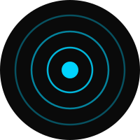
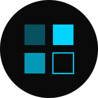
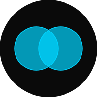

Working with Caden at the International Youth Advocate Summit was a masterclass in strategic storytelling. He has a unique gift for translating complex data into impactful human narratives.

Senior Delegate
UNICEF · SIDS Summit
I'm Caden Fahie — a dual BS/MS Computer Science & Cybersecurity student at Georgia State, a creative director, and a youth advocate. From the British Virgin Islands to Atlanta, my work lives on the seam between engineering, leadership, and craft.
Systematic thinking, technical depth, civic responsibility. The half that studies CS & Cybersecurity at GSU, ships software, and represents the BVI on international stages.
Composition, light, rhythm, restraint. The half that leads P2's rebrand, manages Gems De La Rosa's socials, and treats a portrait as a form of paying attention.
Kaizen (改善) — literally "change for the better" — is the Japanese practice of continuous, incremental improvement. Small. Consistent. Considered.
It's the name I use across every corner of the internet — kaizen_284 on Instagram, kaizen284 on LinkedIn, @Kaizen_284 on YouTube — because it's the belief that ties both sides of this site together. Engineering improves through iteration. Art improves through iteration. So does the person doing either.
Yin and yang is the shape. Kaizen is the practice.
Told less in paragraphs, more in frames. Scroll through the moments that shape how I think and make.
I grew up in the British Virgin Islands and I'm currently in Atlanta pursuing a Dual BS/MS in Computer Science & Cybersecurity at Georgia State, while working as a User Services Technician on campus and holding leadership roles across student government, mentorship, and international youth advocacy. The scenes below are the moments that continue to shape both halves of the practice.

Collaborators, mentors, and organizational leaders on what it's like to build with me.
Working with Caden at the International Youth Advocate Summit was a masterclass in strategic storytelling. He has a unique gift for translating complex data into impactful human narratives.

Caden has a way of taking the words out of your mouth and producing a product that you didn't even know you needed.

Caden goes above and beyond with the tasks he is given on a day-to-day basis.

A cross-section of photography, brand, product, and motion. Hover any piece for context.


A curated slice of the work — the full archive lives on the sub-pages.
Whether it's shipping code, capturing a portrait, running a rebrand, or building a program — kaizen (改善) is the practice. If you have a project worth iterating on, I'd love to hear about it.